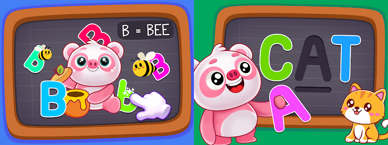

ABC - Learning Game
ABC - Learning is a toddler alphabet learning game that I've worked on. I built this game from scratch, it consists of around 4 to 5 modules with slightly different gameplay. One of the modules which I really liked working on was named Tracing Module, in which the toddler has to trace the alphabet and complete it. Faced alot of complications while implementing the functionality behind it but overcame them with help of research and exploring.
This game is currently available on Android and iOS, both platforms to download.
Android - ABCD Kids - Tracing & Phonics
iOS - ABC Kids - Matching & Tracing